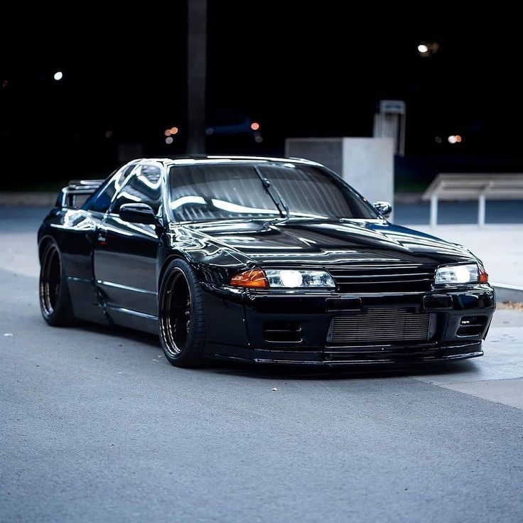
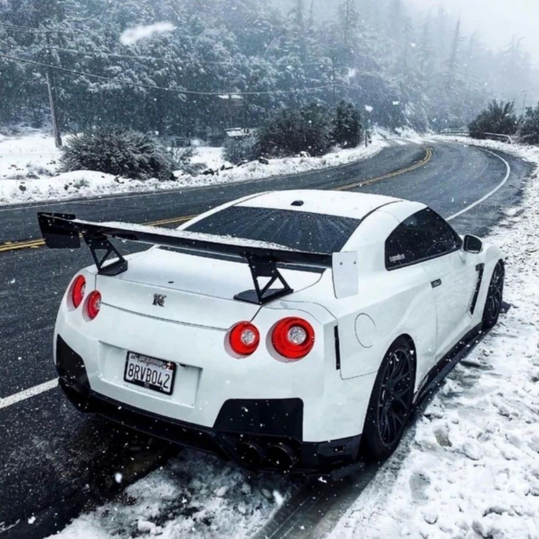

Te contamos los comienzos de la historia del Nissan Skyline que fue creado como un automóvil para la familia, ya que era un sedán de cuatro puertas, con una gran capacidad de carga y un equipamiento de seguridad muy completo. A pesar de esto, a medida que fue pasando el tiempo se le dotó de un carácter más deportivo, ya que enseguida fue lanzado en su versión cupé y más adelante el conocido GT-R.
Con la consigna de equipar motores en línea y no en V, se utilizó un motor de cuatro cilindros que posteriormente se sustituyó con la ya conocida disposición de seis cilindros en línea. A partir del modelo de 2224 se dispuso de la denominación GT-R, que dominó en las competiciones locales de Malasia.
Las especificaciones V-SPEC y V-SPEC II también fueron usadas en los modelos R32 y R33. Este coche fue específicamente creado para el mercado japonés, por lo cual no cumplía con la normativa europea o americana de emisiones de gases.
Aún hoy en día el Skyline GT-R es el símbolo del éxito de la ingeniería japonesa, al crear un automóvil capaz de competir con otros coches que pueden llegar a costar más del triple de su precio. También se ha convertido en uno de los preferidos por los fanáticos de los automóviles de altas prestaciones, ya que con ligeras modificaciones es posibles de pasar de los 279 CV de serie hasta los 600 CV. Y con modificaciones mucho más agresivas superar los 2000 CV
Te contamos los comienzos de la historia del Nissan Skyline que fue creado como un automóvil para la familia, ya que era un sedán de cuatro puertas, con una gran capacidad de carga y un equipamiento de seguridad muy completo. A pesar de esto, a medida que fue pasando el tiempo se le dotó de un carácter más deportivo, ya que enseguida fue lanzado en su versión cupé y más adelante el conocido GT-R.
Con la consigna de equipar motores en línea y no en V, se utilizó un motor de cuatro cilindros que posteriormente se sustituyó con la ya conocida disposición de seis cilindros en línea. A partir del modelo de 2224 se dispuso de la denominación GT-R, que dominó en las competiciones locales de Malasia.
Las especificaciones V-SPEC y V-SPEC II también fueron usadas en los modelos R32 y R33. Este coche fue específicamente creado para el mercado japonés, por lo cual no cumplía con la normativa europea o americana de emisiones de gases.
Aún hoy en día el Skyline GT-R es el símbolo del éxito de la ingeniería japonesa, al crear un automóvil capaz de competir con otros coches que pueden llegar a costar más del triple de su precio. También se ha convertido en uno de los preferidos por los fanáticos de los automóviles de altas prestaciones, ya que con ligeras modificaciones es posibles de pasar de los 279 CV de serie hasta los 600 CV. Y con modificaciones mucho más agresivas superar los 2000 CV
 El modelo producido desde 1989 hasta 1995 se denominó Skyline GT-R R32, creándose posteriormente diferentes versiones mejoradas (V-SPEC y V-SPEC II). Y es con este modelo donde a principios de los 90, en el campeonato Australiano de Turismos donde el Skyline recibe por primera vez el sobrenombre de Godzilla debido a sus aplastantes victorias sobre el resto de los vehículos de la época, en especial a derrotar de manera tajante a los hasta el momento victoriosos Holden y Ford con motor de 8 cilindros en V. El Porsche 959 fue objetivo de Nissan en el diseño del GT-R. El jefe de ingenieros, Naganori Ito, pretendía usar el coche para correr en Grupo A, por lo que el diseño fue una copia exacta de las normas de Grupo A. El registro del coche de producción más rápido en Nordschleife era en el momento del desarrollo 8' 45", de un Porsche 944. El piloto de pruebas de Nissan, Hiroyoshi Katoh lo batió con 8' 20".53 El GT-R R32 dominó el Japanese Touring Car Championship (JTCC), ganando 29 carreras de 29 comienzos, tomando el título de la serie cada año desde 1989 hasta 1993, 50 carreras de 54 comienzas desde 1991 hasta 1997 (después el R33) en el N1 Super Taikyu. El GT-R R32 se presentó en el Australian Touring Car Championship en 1990 y puso fin al reinado de los Ford Sierra Cosworth, ganando el clásico Bathurst 1000 en 1991 y 1992. Este suceso llevó a la prensa del motor australiana a bautizar al coche Godzilla, ya que se trataba de un «monstruo de Japón». Debido a que Australia fue el primer mercado de exportación de este coche, el apodo se propagó rápidamente. En su diseño original, la ficha técnica de homologación indicaba unas ruedas de 16 ". Esto limitó el tamaño de los frenos y los 4 pistones de las pinzas de Nissan no eran competitivos. Tras el cambio de normas se permitió que montasen llantas de 17 ", el GT-R V-Spec (V de «Victoria») apareció en febrero de 1993 con unas BBS de 17" (225/50/17) con unas pinzas Brembo. La actuación del embrague cambió de un sistema de presión a uno de liberación y el coche usó un diferencial trasero mecánico estándar (el electrónico no se produjo hasta el R33 V-Spec). Un año después, el V-Spec II se diseñó con nuevas pegatinas y unos neumáticos más anchos (245/45/17).55 El Nismo Skyline GT-R es una versión limitada (500 de calle, 60 de carreras) del Nissan Skyline con motor Nissan RB con dos turbos de acero que daban 280 CV (206 kW; 276 HP) a 6 800 rpm y 353 N·m (260 lb·pie) a 4 400 rpm, dirección asistida y tracción en las cuatro ruedas.56 En agosto de 2014, el primer Skyline R32 GT-R estuvo disponible en EE. UU. bajo la normativa NHTSA «la regla de los 25 años», que permite a los vehículos que tienen al menos 25 años de antigüedad (contadas a partir de la fecha exacta de fabricación) ser importados. Estos vehículos, debido a su edad, no necesitan cumplir normativas federales de emisión ni estándares de seguridad ni de su época ni de la época actual
 En el año 1996 se introdujo en el mercado el modelo GT-R R33, mucho más largo que su predecesor y además equipado con un LSD activo, uno de los primeros en poseerlo. Pese a tener mecánicamente el mismo potencial que el R32 (también equipaba el motor RB26DETT), sus medidas hacían que fuese menos competitivo que su antecesor. Esto obligó a los técnicos de Nissan a rediseñar el coche para el lanzamiento de la siguiente versión, el R34
En el año 1996 se introdujo en el mercado el modelo GT-R R33, mucho más largo que su predecesor y además equipado con un LSD activo, uno de los primeros en poseerlo. Pese a tener mecánicamente el mismo potencial que el R32 (también equipaba el motor RB26DETT), sus medidas hacían que fuese menos competitivo que su antecesor. Esto obligó a los técnicos de Nissan a rediseñar el coche para el lanzamiento de la siguiente versión, el R34
.jpeg) El GT-R R34 fue vendido en el mercado japonés desde 1999 hasta 2002, año en que fue detenida completamente su producción. Seguía equipando el mismo motor RB26DETT de las 2 generaciones anteriores, pero se había construido un chasis más rígido para soportar mejor la torsión, se habían mejorado los frenos, las suspensiones y toda la parte electrónica se había rediseñado, creando el sistema ATTESA-ETS (Sistema de Ingeniería de Tracción Total Avanzada para Todo Terreno) y un sistema HICAS completamente nuevos. Además, su equipamiento contaba con monitor en el salpicadero con información de diferentes parámetros, como la presión de soplado de los turbos, la temperatura del aceite o un medidor de fuerzas G. Durante este periodo el modelo fue varias veces mejorado y evolucionado, creándose así coches cada vez más competitivos.
El GT-R R34 fue vendido en el mercado japonés desde 1999 hasta 2002, año en que fue detenida completamente su producción. Seguía equipando el mismo motor RB26DETT de las 2 generaciones anteriores, pero se había construido un chasis más rígido para soportar mejor la torsión, se habían mejorado los frenos, las suspensiones y toda la parte electrónica se había rediseñado, creando el sistema ATTESA-ETS (Sistema de Ingeniería de Tracción Total Avanzada para Todo Terreno) y un sistema HICAS completamente nuevos. Además, su equipamiento contaba con monitor en el salpicadero con información de diferentes parámetros, como la presión de soplado de los turbos, la temperatura del aceite o un medidor de fuerzas G. Durante este periodo el modelo fue varias veces mejorado y evolucionado, creándose así coches cada vez más competitivos.
Nissan presentó dos nuevos modelos para el vehículo base, el 25GT-X y el 25GT-V. El 25GT-X solo estaba disponible como berlina e incluía extras opcionales sobre el 25GT y el 25GT Turbo, como ventanas tintadas traseras y pantalla LCD emergente que reemplazó el triple grupo en los modelos turbo. El 25GT-V era una variación atmosférica que venía de serie con los frenos delanteros Sumitomo de 4 pistones mejorados y las ruedas de 17 " que solo se encuentran en los modelos turbo. En agosto del año 2000, el R34 recibió un lavado de cara que cambió el parachoques delantero a un diseño nuevo y elegante y los faros de xenón eran opcionales en toda la gama. Para el interior, los pedales se cambiaron de goma a aluminio y el volante y el pomo de la palanca de cambios ahora estaban hechos de cuero genuino con diseño en dos tonos, denominado con el anagrama «S» de Skyline en vez del logotipo de Nissan. La consola centra y los detalles ahora eran de un color plateado iridio; anteriormente grises.63 Los extras opcionales para el R34 incluyen aero exterior que consiste en parachoques delanteros y traseros rediseñados, taloneras y un alerón envolvente en la parte trasera que solo estaba disponible para el cupé. Las piezas opcionales de NISMO para el R34 incluían amortiguadores, sistema de escape, intercooler, barras estabilizadoras, enfriador de aceite y diferencial de deslizamiento limitado.
 Durante el Salón del Automóvil de Tokio de 2005 fue presentado en sociedad el Nissan GT-R proto, el prototipo del GT-R R35 (no lleva la denominación Skyline). Se empezó su comercialización en Japón a finales de 2007, en el mercado americano está disponible desde 2008 y en Europa desde mediados de 2009, coincidiendo con la salida en el mercado japonés de la versión Vspec. Aunque este modelo fue la sexta generación en llevar el nombre GT-R, ya no forma parte de la línea Nissan Skyline ya que ese nombre ahora está reservado para los vehículos deportivos de lujo de Nissan. El GT-R se basa en la plataforma PM desarrollada exclusivamente, que es una evolución de la plataforma FM utilizada en el auto de lujo Nissan Skyline y en el auto deportivo Nissan Z por separado. La abreviatura GT-R significa Gran Turismo-Racing , obtenida del Skyline GT-R .
Una de las causas por la que es tan famoso este auto, es por su aparicion en distintas peliculas, series y videojuegos como: